Talk OKC-001 · Cosmology & Extragalactic Astrophysics WG
Stockholm University
An autonomous, multi-agent system for catalogue-to-cosmology analysis in the Stage-IV era
> ARTHUR LOUREIRO · 22/OCT/2026
01
How 2pt analyses are done in large collaborations, and why the results take years.
The usual way
01
Positions, shapes, photo-z, weights
from the survey
02
Galaxies into equal-area sky pixels, plus masks
HEALPix
03
Angular power spectra Cℓ on a masked sky
NaMaster
04
Error bars and their correlations
TJPCov
05
Cℓs, n(z) and covariance in one file
SACC
06
Theory, likelihood, sampler → posteriors
CCL, Firecrown, CosmoSIS
SACC ≈ a FITS file for a 2pt measurement
CCL ≈ CAMB/CLASS-style predictions, in Python
Firecrown ≈ the χ²: data against theory
CosmoSIS ≈ the MCMC driver
cosmoTRON · OKC C&EA WG · grey = the DESC code that does the step
A 60-second primer
γ × γ
Shapes of source galaxies, sheared by all the matter in front of them. Spin-2 field.
δ × γ
Lens positions against source shapes: the matter around the lens galaxies.
δ × δ
Positions of lens galaxies: the matter field, times the galaxy bias. Spin-0 field.
550 × 550
Tomography multiplies it: an LSST-Y1-like setup with 5 lens + 5 source bins gives 55 tracer pairs × 10 bandpowers in one joint covariance.
cosmoTRON · OKC C&EA WG
In a large collaboration
Shear calibration, PSF, image sims
Binning and n(z) calibration
Lens selection, systematics weights
Spectra, covariance, null tests
Modelling, scale cuts, samplers
Unblinding criteria, sign-off
Every hand-off between these teams is a config file, a file format, and a telecon.
cosmoTRON · OKC C&EA WG
Motivation
○ last data in the release taken ● flagship cosmology paper on arXiv
DES Y1
DES Y3
DES Y6
KiDS-450
KiDS-1000
KiDS-Legacy
3.5 yr
5.3 yr
7.0 yr
0.7 yr
2.5 yr
5.8 yr
2014
2016
2018
2020
2022
2024
2026
Papers: arXiv 1708.01530 · 2105.13549 · 2601.14559 · 1606.05338 · 2007.15632 · 2503.19441
The Stage-III lesson
from the last night of DES data to its final 3×2pt cosmology.
LSST: ten years of data, 18,000 deg², billions of galaxies.
We cannot afford the same pipeline lag.
02
Agents, teams of agents, an F1 car, and why the engine runs locally.
The idea
Think
the LLM picks the next step
Act
a tool runs tested code
Observe
it reads the result
until the job is done
Goal in:
TASK.md →
→ Product out:
maps, Cℓs, chains
A chatbot answers.
An agent acts.
Give it a goal and a set of tools. It loops — think, act, observe — until the job is done.
In cosmoTRON the LLM only thinks. The numerics are always done by the tools.
cosmoTRON · OKC C&EA WG
The idea
One long context: early decisions get forgotten.
Every tool on the table: easy to call the wrong one.
One huge transcript: hard to check.
Each agent has one job and only the tools it needs.
Short, focused contexts: a mid-sized open model copes.
Every hand-off is a file you can check.
Catalogue-to-cosmology is programmatic, with checkable intermediate products: exactly the profile multi-agent systems are good at.
Config files beat bespoke scripts.
Natural language beats config files.
cosmoTRON · OKC C&EA WG
The idea · click to build
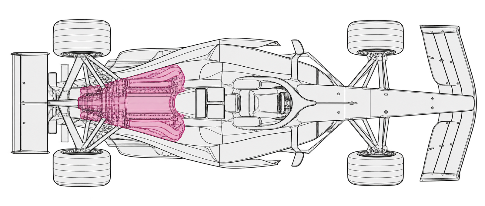
the LLM: qwen3.6, served locally
the harness: opencode (or Claude Code)
the tools: tested, deterministic codes
the agents: planner, ingestor, coder, reviewer…
the researcher: sets the goal in TASK.md
the human gates: plan, systematics, memory
manifest.json, replay.py, CITATIONS.md
SKILLS and workspace conventions
A great car with a bad engine won’t win.
A great engine with no car won’t even finish.
The idea
Pinned weights never change under you: the same engine in five years.
Unreleased survey data never leaves the machine.
No per-token bill: run the same TASK a hundred times to measure the agents’ own scatter.
No vendor can change, re-price or retire the engine.
The goal: a full analysis driven from workstation-class hardware, not a frontier cloud model.
cosmoTRON · OKC C&EA WG
The idea
60
tokens per second
Fast enough that you don’t notice it writing.
Model
Qwen3.6, 8-bit quantised (Q8)
Served by
ollama today, moving to vLLM
Hardware
NVIDIA DGX Spark: a desk-side box, GB10 Grace Blackwell, 128 GB unified memory
Harness
opencode; Claude Code also supported
cosmoTRON · OKC C&EA WG · swapping the engine is a config change
03
The tools, the team, a session from TASK.md to chains, the data registry and the telemetry.
cosmoTRON
Wrappers around the numerical codes: maps, power spectra, covariances, theory, likelihood.
HEALPix · NaMaster · TJPCov · CCL · Firecrown
Written know-how the agents load: workspace conventions, how to drive each code, plotting…
A roster of specialised agents for catalogue-to-cosmology analysis.
All on open-weight models (qwen3.6 served via ollama), with opencode as the harness and the cosmotron orchestrator as the primary agent. Claude Code works too.
cosmoTRON · OKC C&EA WG
cosmoTRON
Galaxy catalogue
Agent layer
@cosmotron · plan gate
MCP tool server
cosmotron-mcp
Standard DESC codes
spectra · covariance · theory · likelihood · data file
NaMaster · TJPCov · CCL · Firecrown · SACC
Cosmology
Posteriors and plots
Purple: the agent layer, where the LLM makes decisions. Green: deterministic, tested code.
cosmoTRON · OKC C&EA WG
How it works · the agents
cosmotron
The orchestrator: the entry point, hands work to the others
session_bootstrapper
Creates the session folder, manifest and metadata
literature_scout
Light ADS/arXiv context lookup (MCP-ADS-arXiv)
planner
Drafts the analysis plan; a human approves it
data_ingestor
Standardises catalogues; registers or reuses them
analysis_coder
Runs maps, spectra, covariance, data-file and plot tools
systematics_checker
Null tests: B-modes, PSF leakage, cross-correlations, deprojection
inference
Builds the likelihood, launches and polls the sampler
reviewer
Judges the evidence: PASS/FAIL, memories, replay.py, CITATIONS.md
The usual flow
TASK.md what you want, in plain language
# TASK: Tomographic cosmic shear
## Data
data_folder: ./data/glass_450_shear/
## Pipeline config
- 3 redshift bins, nside = 256, ℓ = 10–256
## Analysis
- Measure all auto- and cross-spectra
- Run the B-mode null tests
- Save the data vector with n(z) and covariance
## Plots
- Spectra vs theory, n(z), covariance, maps
DATA_DESCRIPTION.md what the catalogue is
# The GLASS 450 Survey
- catalogue file: glass_cosmic_shear.fits
## Columns → roles
- RA, DEC → position (deg)
- G1, G2 → ellipticities
- SYST_WEIGHT → weight
- ZBIN → redshift bin (0, 1, 2)
## Also provided
- n(z): one file per bin
- theory Cls: theory_cls/
- mask: build per bin from the weights
Simplified here; the real files open Example 1. No pipeline config, no glue scripts.
The usual flow · click to build
outputs
agents
human input
tools
TASK.md
cosmoTRON
orchestrator
Session
bootstrapper
workspace/
session_dir
Literature
scout
ADS / arXiv
search
Science
context block
Read
memory
Planner
Human
approves plan
no
DATA_
DESCRIPTION
Data
ingestor
Data registry:
reuse or add
Standardised
catalogue
yes
Analysis
coder
Measurement
tools
Data file
(SACC) + meta
Plotting
tools
Cℓs, covs,
check plots
Systematics
checker
Null-test
reports
Systematics?
Human decides
Inference
Likelihood +
sampler files
Job runner
(local / HPC)
MCMC
chains
Reviewer
PASS / FAIL
Save new
memory?
MEMORY.md
CITATIONS.md
replay.py
How it works
First time a catalogue is used
Raw catalogue
→
Clean and standardise
column roles, cuts, per-bin catalogues, masks, n(z), σ_e, n_eff
→
Register
data registry
→
Measure
Every run after that
Same data in a new TASK
→
Cleaning skipped
the ingestor finds it in the registry and reuses it
→
Reuse
registry hit
→
Measure
Keeps standardised catalogues (also per bin), masks, n(z), reference theory, systematics templates, σ_e, n_eff, c-terms
From the C2C TASK.md: “Reuse the glass dataset if it is already in the registry.” Next: an L2 registry for nside-dependent products. The cosmotron-data-registry CLI also pushes catalogues to the HPC.
How it works · telemetry · 1 / 2
Paths, map set-up and per-bin statistics, measured at ingest.
Every _from_session tool reads its inputs from here: the agent passes a folder, not numbers it might garble.
Provenance and the original task sit next to it, in session_context.json.
How it works · telemetry · 2 / 2
With its arguments and timestamp, including the scripts the agents wrote themselves.
Re-runs the whole analysis in plain Python: no LLM in the loop.
Multi-agent systems are auto-documenting. This is what you would hand to a referee.
04
Real cosmoTRON sessions on GLASS lognormal mocks: every plot here was made by the agents.
Example 1 · TASK.md · 1 / 2
# TASK: Tomographic Cosmic Shear – GLASS 450
## Data
data_folder: ./data/glass_450_shear/
(See DATA_DESCRIPTION.md for probe, columns,
tomographic binning, per-bin weight-mask policy,
n(z), and theory Cls.)
## Pipeline config
- probe = galaxy_shear (spin-2 cosmic shear)
- nside = 256, lmin = 10, lmax = 256
- 10 log-spaced bandpowers (ell_binning = log)
- Masked survey: apodise the per-bin weight
masks, C2, scale ≈ 1.0 deg.
- Report the per-bin n_eff and sigma_e recorded
in the manifest at ingest.
## Analysis
- Compute auto- and cross-Cls for the 3
tomographic bins with NaMaster.
- Check for B modes and EB modes (spin-2 null
tests).
- Covariance cosmology: sigma8=0.794, h=0.70,
Omega_c=0.25, Omega_b=0.05, other params
standard LCDM.
- Save a SACC data vector with the NZ tracer
(include n(z) and covariance).
- Save the e1/e2 healpix maps and the per-bin
masks in healpix FITS.
## Plots
1. Estimated Cls (noise-removed) vs the theory Cls
in the data folder: theory unbinned, y-axis
ell*C_ell, include the noise power spectrum,
error bars from the covariance.
2. Calibrated n(z) vs a histogram of catalogue
redshifts, all bins one panel.
Example 1 · TASK.md · 2 / 2
… ## Plots (continued)
3. Covariance with colour bar; x/y ticks in ell.
4. Covariance validation: covariance diagonal vs
Knox Cov = 2*(cls_est + nl_est)^2 /
(f_sky * (2*ells + 1)).
5. Healpix maps per tomographic bin.
6. B-mode and EB-mode null tests (plot B and EB
the same way as E).
Measure the shear power spectra between 3 redshift bins on a masked sky, run the null tests, compute the uncertainties, save it all in one data file, and make six diagnostic plots.
That, plus a description of the data, is everything the human writes.
Example 1 · DATA_DESCRIPTION.md · 1 / 2
# The GLASS 450 Survey
- catalogue file: glass_cosmic_shear.fits
- redshift distributions:
redshift_distributions_tomobin_0.dat,
redshift_distributions_tomobin_1.dat,
redshift_distributions_tomobin_2.dat
- theory cls:
theory_cls/glass_theory_cls_{P}_bin{A}_{B}.txt
- survey footprint (reference only, NOT the
analysis mask): survey_mask_N256.fits
## Probe & ingestion
- probe: galaxy_shear (spin-2, cosmic shear only)
- columns → roles:
- RA → RA (deg)
- DEC → DEC (deg)
- PHOTO_Z → photometric redshift (reference;
NOT used for binning)
- G1 → e1 (ellipticity component 1)
- G2 → e2 (ellipticity component 2)
- SYST_WEIGHT → weight (inverse-variance
shear weight)
- ZBIN → tomographic-bin index (0,1,2)
- tomography: bin by the ZBIN column
(bin_col=ZBIN, bin_values=[0,1,2]);
do NOT use z_edges.
- mask: build a PER-BIN shear mask from the
weights (mask_from_weights): mask = Σw where
objects are present, 0.0 elsewhere. Do NOT use
survey_mask_N256.fits as the analysis mask –
it is a footprint reference only.
- sigma_e: measure per bin from the catalogue
(no user value provided).
- Maximum usable multipole for this catalogue:
Lmax = 256.
Example 1 · DATA_DESCRIPTION.md · 2 / 2
## Tomographic bins (calibrated)
- Bin 0: ZBIN=0, z in [0.0, 0.832]
- Bin 1: ZBIN=1, z in [0.832, 1.287]
- Bin 2: ZBIN=2, z in [1.287, 3.0]
## Redshift distributions
Calibrated photometric n(z), one file per bin
(galaxies/arcmin^2). Pass explicitly per bin
(order = bin 0,1,2):
- bin 0: redshift_distributions_tomobin_0.dat
- bin 1: redshift_distributions_tomobin_1.dat
- bin 2: redshift_distributions_tomobin_2.dat
Columns: z, dndz.
## Systematics template maps
None. (No survey-property maps – stellar density,
depth, seeing, PSF – ship with this catalogue,
so no template ingestion / cross-correlation
step.)
## Theory Cls
folder: theory_cls/ – multipoles [2, 256],
columns: ell, Cls.
File name: glass_theory_cls_{P}_bin{A}_{B}.txt
- P=GG → cosmic-shear E-mode (spin-2)
predictions – USE THESE.
- P=gg → galaxy clustering (spin-0) – ignore
(shear-only analysis).
Per-bin AUTO theory (→ manifest theory_path,
order bin 0,1,2):
- theory_cls/glass_theory_cls_GG_bin0_0.txt
- theory_cls/glass_theory_cls_GG_bin1_1.txt
- theory_cls/glass_theory_cls_GG_bin2_2.txt
Cross theory (bin{A}_{B}, A≠B) exist for
cross-spectra plots.
Example 1 · GLASS 450, 3 bins
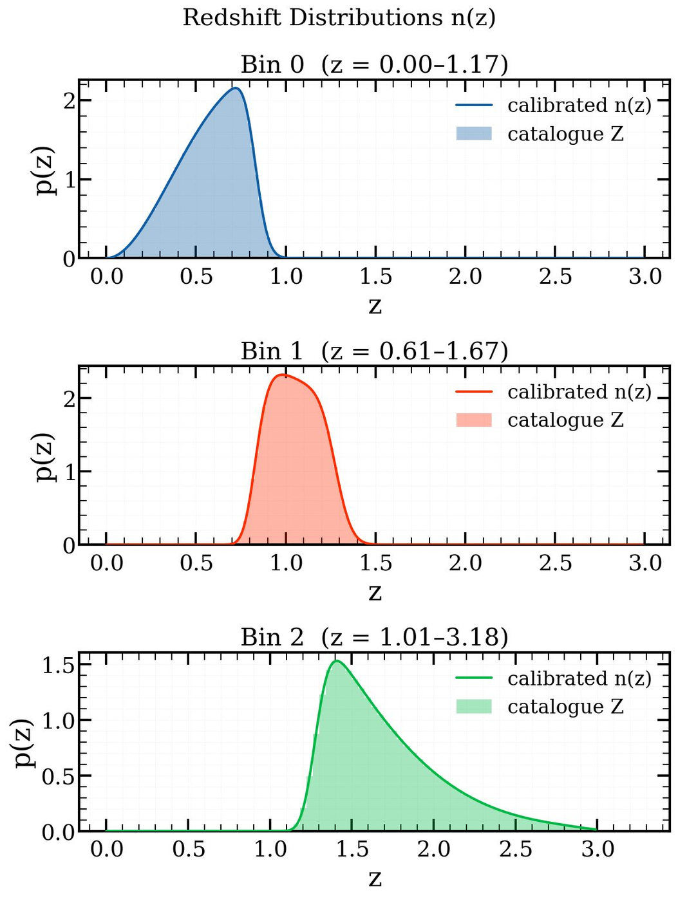
The run from the TASK.md we just read. Every plot in this example was made by the agents in one session.
Plot 2: the calibrated redshift distribution n(z) of each bin against the catalogue redshifts.
The ingestor builds per-bin catalogues and weight masks, and records the effective number density and shape noise in the manifest.
cosmoTRON · OKC C&EA WG
Example 1 · GLASS 450, 3 bins
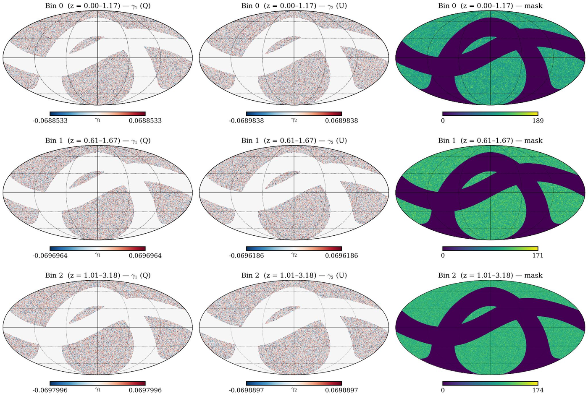
γ₁, γ₂ and the weight mask for each bin, at nside 256, saved as HEALPix FITS.
The masks are smoothed at the edges (C2 apodisation, 1°) before measuring the spectra, exactly as the TASK asked.
cosmoTRON · OKC C&EA WG
Example 1 · GLASS 450, 3 bins
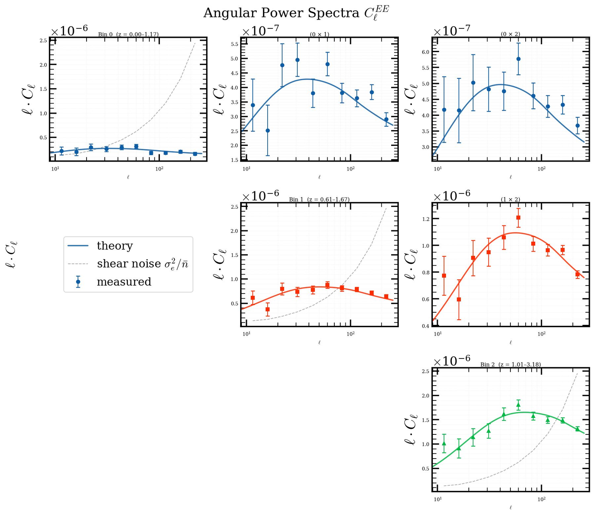
Cℓ^EE: measured vs theory, all 6 bin pairs
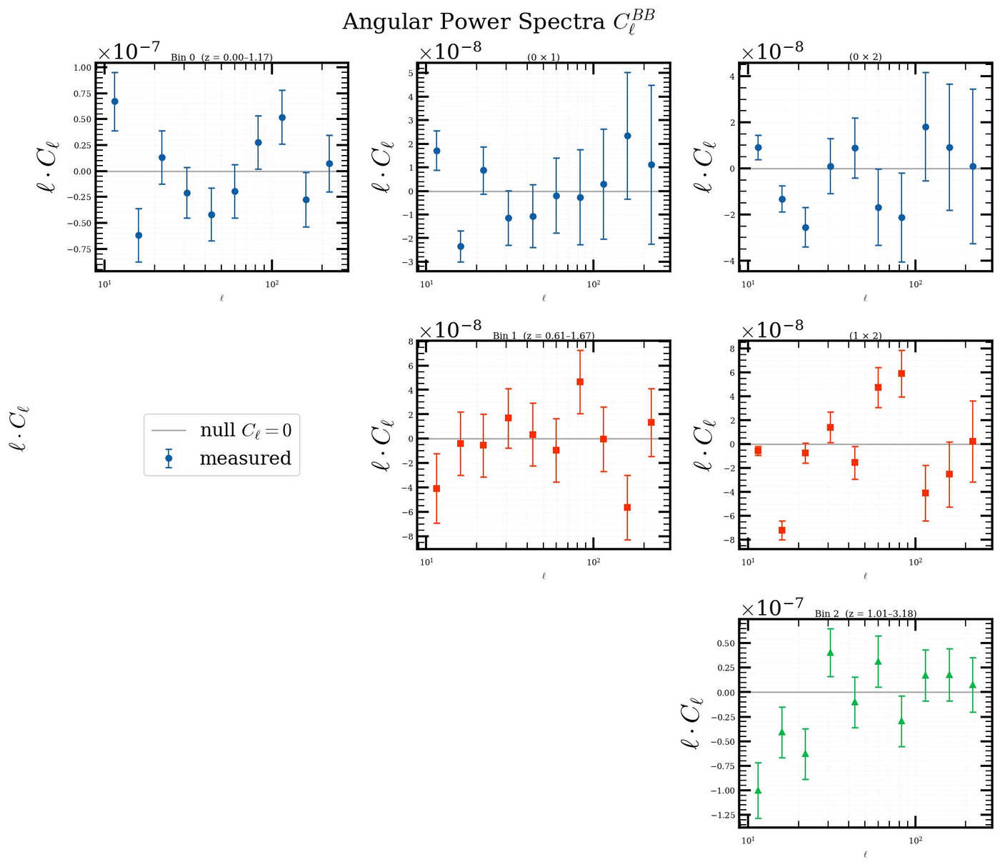
Cℓ^BB: the spin-2 null test
cosmoTRON · OKC C&EA WG
Example 2 · TASK.md · 1 / 2
# TASK: LSST Y1 3x2pt Analysis
## Data
data_folder: ./data/lsst_y1_glass_sim/
(See DATA_DESCRIPTION.md for probe, columns,
tomographic binning, per-bin weight-mask policy,
n(z), and theory Cls.)
### Lens Galaxies
- catalogue name: glass_lsst_y1_lens_catalogue.h5
- probe: galaxy_density
- bias: 1.5
### Source Galaxies
- catalogue name:
glass_lsst_y1_source_catalogue.h5
- probe: galaxy_shear
## Pipeline config
- there are two catalogues in this folder lens
clustering (glass_lsst_y1_lens_catalogue.h5)
and source shear
(glass_lsst_y1_source_catalogue.h5), 5 tomo
bins each.
- nside = 256, lmin = 40, lmax = 256
- 8 log-spaced bandpowers (ell_binning = log)
- Masked survey: apodise the per-bin weight
masks, C1, scale ≈ 4.0 deg.
- Report the per-bin n_eff and sigma_e recorded
in the manifest at ingest for cosmic shear.
## Analysis
- Compute auto- and cross-Cls for galaxy
clustering, cosmic shear, galaxy-galaxy
clustering (GGL).
Example 2 · TASK.md · 2 / 2
… ## Analysis (continued)
- lens x source bin pairs to estimate and keep
for the GGL (lens x src) theory Cls --
[lens_bin, source_bin]:
[(0, 2), (0, 3), (0, 4), (1, 3), (1, 4),
(2, 4), (3, 4)]
- Check for B modes and EB modes (spin-2 null
tests).
- Skip c-term and psf systematic checks!
- Covariance cosmology: sigma8=0.794, h=0.70,
Omega_c=0.25, Omega_b=0.05, other params
standard LCDM. Use galaxy bias=1.5 for the
lens sample.
- Save a SACC data vector with the NZ tracer
(include n(z) and covariance).
- Save all healpix maps and the per-bin masks
in healpix FITS.
## Plots
1. Estimated Cls (noise-removed) vs the theory
Cls in the data folder: theory unbinned,
y-axis ell*C_ell, include the noise power
spectrum, error bars from the covariance.
Make one of these plots per probe.
2. Calibrated n(z) vs a histogram of catalogue
redshifts, all bins one panel.
4. Systematics weight visualisation.
3. Covariance with colour bar; x/y ticks in ell.
4. Covariance validation: covariance diagonal vs
Knox Cov = 2*(cls_est + nl_est)^2 /
(f_sky * (2*ells + 1)).
5. Healpix maps per probe (catalogue) for all
tomographic bin.
6. B-mode and EB-mode null tests (plot B and EB
the same way as E).
Examples 1 and 2
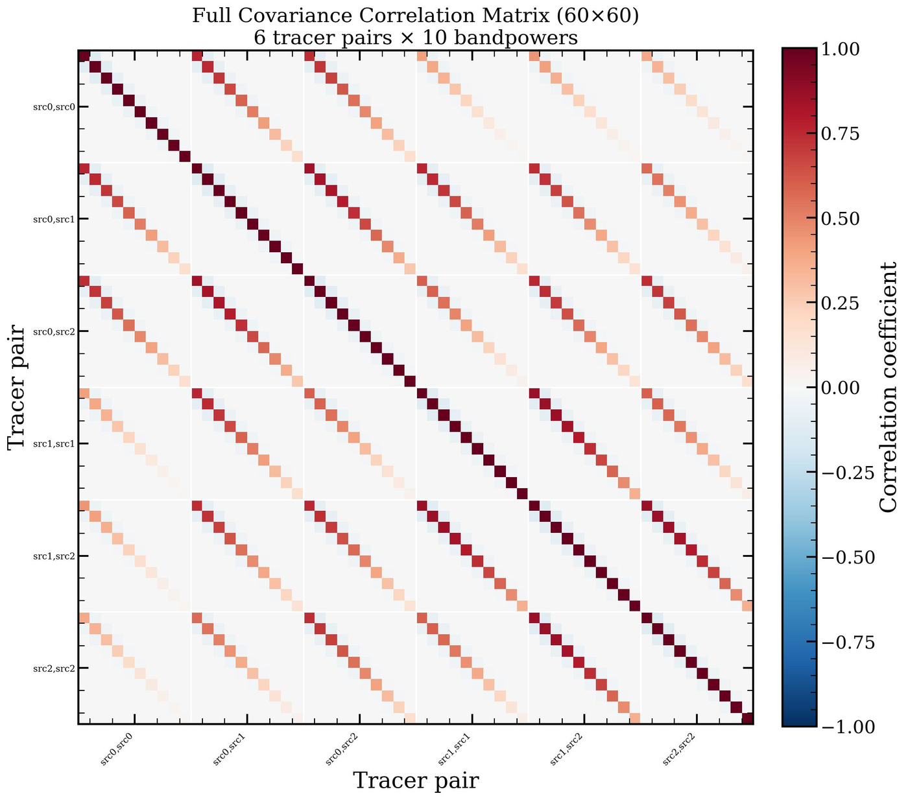
Cosmic shear: 60 × 60
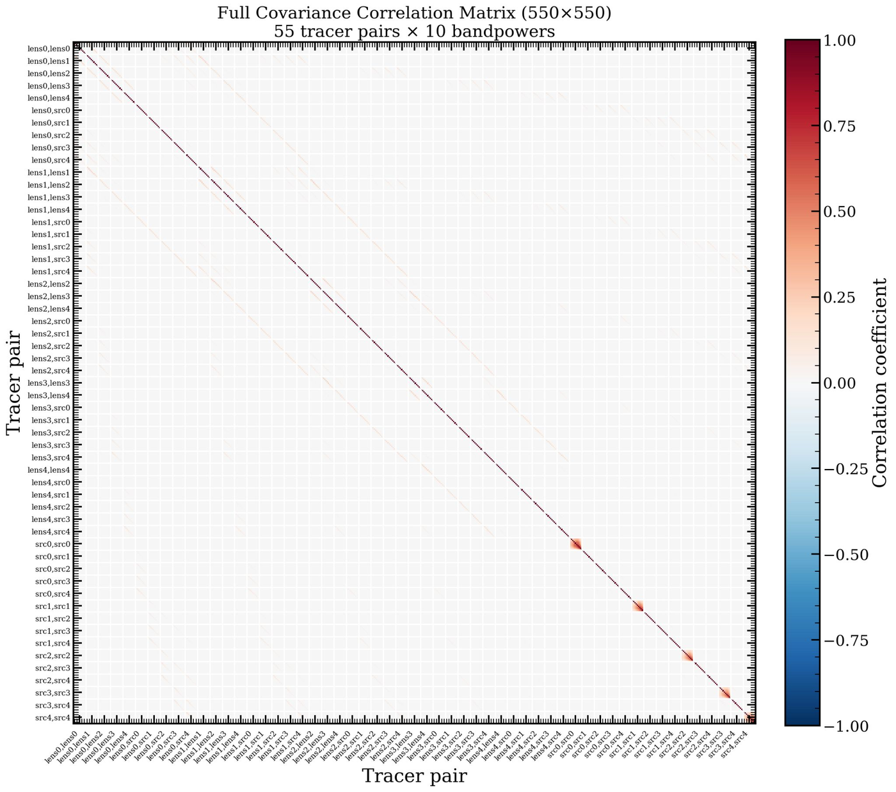
LSST-Y1-like 3×2pt, 5 + 5 bins: 550 × 550
cosmoTRON · OKC C&EA WG
Example 3 · TASK.md · 1 / 2
# TASK: quick GLASS run + chain
(full-sky, single-bin clustering + inference)
## Data
data_folder: ./data/glass/
(See DATA_DESCRIPTION.md for probe, columns,
single-bin (no tomography), n(z), theory Cls.)
Reuse the glass dataset if it is already in the
registry.
## Pipeline config
- nside = 128, lmax = 256 (the catalogue's Lmax
cap; below the nside-128 Nyquist of 383)
- Full-sky: no mask, no apodisation.
- Single bin – no tomography.
- Do not save healpix maps. No systematics
checks.
## Analysis
- Compute the auto-Cl with NaMaster.
- Compute the Gaussian covariance for the bin
(required for the data vector).
- Assemble the SACC data vector with
`assemble_sacc_from_session`.
- Run the Firecrown + CosmoSIS inference chain
(`@inference`) on the SACC with the config,
priors, and sampler below. Use the linear
CAMB matter-power setting.
## Inference:
Use 18 cores for the inference.
Example 3 · TASK.md · 2 / 2
### firecrown config:
```yaml
correlation_space: harmonic
number_counts_factories:
- type_source: default
per_bin_systematics:
- type: LinearBiasSystematicFactory
global_systematics: []
```
### inference priors:
Omega_c: [0.15, 0.27, 0.40]
sigma_8: gaussian(0.80, 0.2)
lens0_bias: [0.8, 1.5, 2.5]
### inference sampler:
use a nested sampler like nautilus with
n_live=150, f_live = 0.02, n_eff = 250
## Plots to make:
- Plot the estimated Cls (noise removed) against
the theory Cl in the data folder. Do not bin
the theory power spectrum. y-axis should be
ell*C_ell. Include the noise power spectrum.
Include error bars from the covariance on the
noise-removed Cls.
- AFTER INFERENCE: plot 1D histograms of the
sampled parameters and the 2D corner plots of
the posterior.
- Skip all other plots apart from the two listed
above.
Example 3 · GLASS, full sky, 1 bin
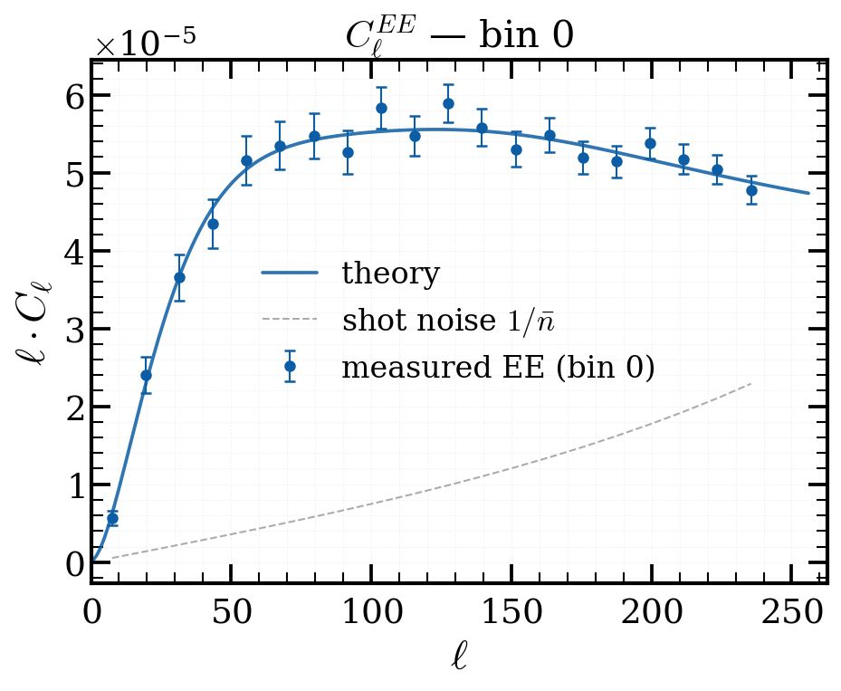
Clustering power spectrum against theory, then covariance, data file, likelihood and sampler, in one session.
Likelihood: Firecrown. Sampler: nautilus, driven by CosmoSIS. Priors and cores all set in the TASK.
cosmoTRON · OKC C&EA WG
Example 3 · GLASS, full sky, 1 bin
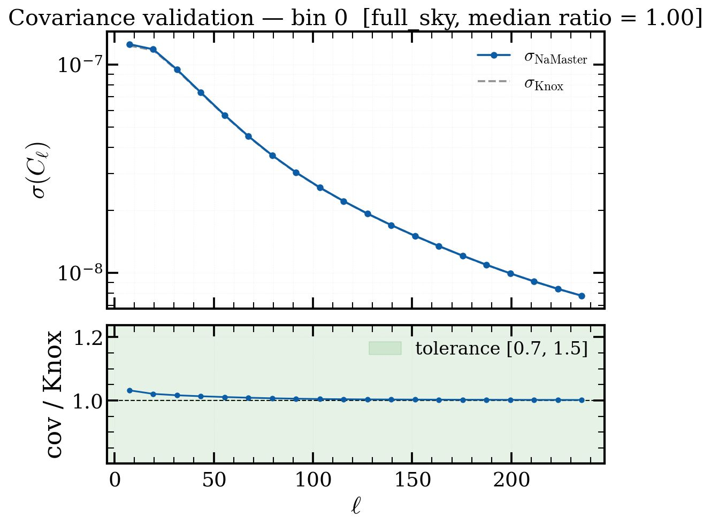
σ(Cℓ) vs Knox: median ratio 1.00 on the full sky
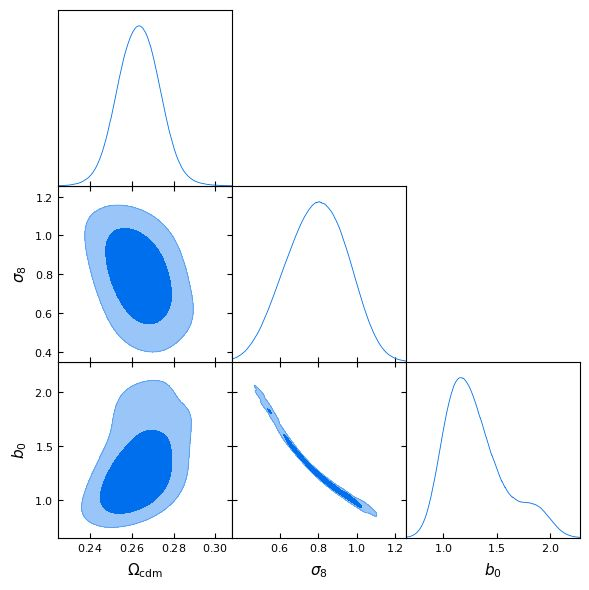
Fiducial: σ8 = 0.791, Ωcdm = 0.25, b0 = 1.2
cosmoTRON · OKC C&EA WG
05
Heavy jobs on HPC, work in progress, and where it could go next.
Heavy jobs and async sessions
An MCP tool call times out after 60 s. Real catalogues and MCMC chains take hours.
1
Start the session
on your laptop
→
2
Dispatch to HPC
SLURM job
→
3
Detach
the session keeps running
→
4
Push notification
when it needs an agent or you
→
5
Reattach
and pick up where it stopped
Helper CLIs
cosmotron-remote HPC set-up wizard, code sync, cancel jobs
cosmotron-session watch, cancel, control detached sessions
cosmotron-data-registry push catalogues to the HPC
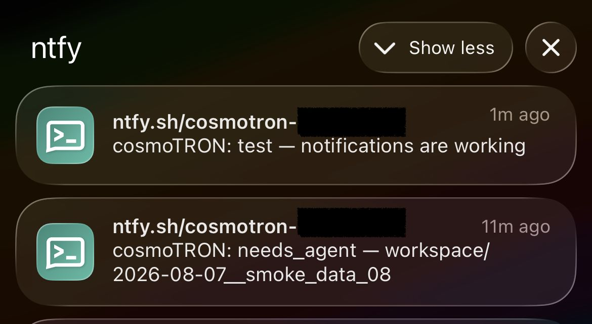
Status
At least two catalogues tested; still under construction
Working, under testing
Working, needs more work
Added since the proposal
cosmosis-standard-lib and inference skills, under testing
Remote set-up, session control, data registry
cosmoTRON · OKC C&EA WG
Work to be done
L2 data registry (nside-dependent products)
SKILLS.md for the theory code (CCL)
Blinding the data vector (Smokescreen)?
A “forecast mode”: new agent or new skill?
Real-space measurements?
NERSC tests?
CosmoDC2 run: reproduce the DESC pipeline results (Prat et al. 2023)?
3×2pt tests on GLASS mocks (ongoing)
LLM model comparison
Run on KiDS-Legacy real data?
Other data with validated results (suggestions?)
Full-scale inference
cosmoTRON · OKC C&EA WG
Where it could go
Same agents, no data: connect to DESC’s forecasting code (Augur) and ask “what would LSST Y1 constrain with this set-up?” in plain language.
CMB lensing × galaxies, ISW, cluster counts, void lensing: a new tool and a new skill, not a new pipeline.
The tools layer is the bottleneck, and it is the easy part to extend. Got a code you want wrapped?
cosmoTRON · OKC C&EA WG
Let’s discuss
What would you need to see before trusting an agent-run analysis?
Same TASK, same catalogue, many runs: how much scatter do the agents’ own choices add?
Plan, systematics, memory today. Too many, too few?
What would you hand to cosmoTRON first?
cosmoTRON · OKC C&EA WG
> SESSION COMPLETE · THANKS!
Docs arthurmloureiro.github.io/cosmotron
Prototype (AG2) github.com/arthurmloureiro/cosmotron-legacy
References · 1 / 2
HEALPix Górski et al. 2005, ApJ 622, 759
NaMaster Alonso, Sánchez & Slosar 2019, MNRAS 484, 4127
CCL Chisari et al. 2019, ApJS 242, 2
TJPCov, SACC, Firecrown LSST DESC, github.com/LSSTDESC
CosmoSIS Zuntz et al. 2015, A&C 12, 45
TXPipe Prat et al. 2023, OJAp 6, arXiv:2212.09345
GLASS Tessore et al. 2023, OJAp 6, arXiv:2302.01942
nautilus Lange 2023, MNRAS 525, 3181
CAMB Lewis, Challinor & Lasenby 2000, ApJ 538, 473
Augur Rogozenski et al. 2026, arXiv:2608.03876
Smokescreen Loureiro et al. 2026, arXiv:2604.18111
Qwen3 Yang et al. 2025, arXiv:2505.09388
ollama ollama.com
opencode opencode.ai
Model Context Protocol modelcontextprotocol.io
mcp-ads-arxiv github.com/estevesjh/mcp-ads-arxiv
Claude Code code.claude.com/docs
Docs arthurmloureiro.github.io/cosmotron
Prototype (AG2) github.com/arthurmloureiro/cosmotron-legacy
DESC project proposal Google Doc (DESC members)
References · 2 / 2
DES Y1 3×2pt Abbott et al. 2018, arXiv:1708.01530
DES Y3 3×2pt Abbott et al. 2022, arXiv:2105.13549
DES Y6 3×2pt DES Collaboration 2026, arXiv:2601.14559
DES Y6 cosmic shear DES Collaboration 2026, arXiv:2602.10065
KiDS-450 Hildebrandt et al. 2017, arXiv:1606.05338
KiDS-1000 Heymans et al. 2021, arXiv:2007.15632; Asgari et al. 2021, arXiv:2007.15633
KiDS-Legacy Wright et al. 2025, arXiv:2503.19441; Stölzner et al. 2025, arXiv:2503.19442
DES Y1 Gold arXiv:1708.01531
DES Y3 Gold arXiv:2011.03407
DES DR2 arXiv:2101.05765
KiDS DR4 arXiv:1902.11265
KiDS DR5 arXiv:2503.19439
Prat et al. 2023 The catalog-to-cosmology framework for weak lensing and galaxy clustering for LSST, OJAp 6, arXiv:2212.09345
A
The tools layer, and the full manifest.json and replay.py from Example 1.
cosmotron-mcp
01 Catalogue
catalogue
Inspect it, write a standard one
02 Maps
maps
Catalogue to HEALPix, spin-0 and spin-2
03 Spectra
spectra
Power spectra on a masked sky
systematics_
checks
c-term, PSF leakage, B-modes
04 Covariance
covariance
Error bars, checked against Knox
05 Data file
sacc
Cℓs, n(z) and covariance in one file
06 Inference
inference
Likelihood + sampler configs, run summaries
Bookkeeping
io products and provenance
jobs heavy jobs, async
citations CITATIONS.md
scripting the escape hatch
cosmoTRON · OKC C&EA WG · same six steps as the 2pt flowchart
Keeping agents honest · manifest.json · 1 / 2
{
"session_dir":
"workspace/2026-07-07_glass_cosmic_shear_09",
"survey": "glass_shear",
"raw_path":
"./data/glass_450_shear/glass_cosmic_shear.fits",
"nside": 256,
"lmax": 256,
"mask_path": |
"workspace/2026_07_07_glass_cosmic_shear_09/
weights_mask.fits",
"mask_components": null,
"mask_kind": "weight",
"completeness_path": null,
"nz_path": null,
"theory_path": null,
"tomographic_bins": [
{
"bin_id": 0,
"z_min": 0.00010566096873892775,
"z_max": 1.173879231210603,
"bin_value": 0,
"fits_path":
"results/bin_00_galaxy_shear_catalogue.fits",
"n_objects": 44771422,
"columns": [
"RA",
"DEC",
"Z",
"weight",
"E1",
"E2"
],
"spin": 2,
"probe": "galaxy_shear",
"sigma_e": 0.2697476616359399,
"n_eff_arcmin2": 0.5979058000905422,
"m": null,
Keeping agents honest · manifest.json · 2 / 2
"sigma_m": null,
"catalogue_stats": {
"n_objects": 44771422,
"z_min": 0.00010566096873892775,
"z_max": 1.173879231210603,
"z_median": 0.6032109916597013,
"weight_sum": 44771422.0,
"weight_sq_sum": 44771422.0,
"ra_range": [
9.4930317207087e-06,
359.99998805410996
],
"dec_range": [
-89.98372719523564,
89.99379243873334
],
"n_before_selection": 133758910,
"n_after_selection": 133758910,
"sigma_e_measured": 0.2697476616359399,
"n_bar": 112.90917115145035,
"f_sky": 0.5042088826497396,
"f_sky_eff": 0.4988725944126653,
"sigma_e_source": "measured",
"sigma_e": 0.2697476616359399,
"n_eff_arcmin2": 0.5979058000905422
},
"nz_path":
"data/glass_450_shear/
redshift_distributions_tomobin_0.dat"
},
{
"bin_id": 1,
[...]
Keeping agents honest · replay.py · 1 / 2
Every tool call the agents made, in order, with arguments and timestamps, plus the scripts they wrote. Re-runs in plain Python, no LLM in the loop. The status print after each call is shown once (step 1); elsewhere it is marked “# + print”.
#!/usr/bin/env python
# Run from repo root:
# python workspace/2026-07-07_glass_cosmic_shear_09/
# scripts/replay_*.py
#
# Session: workspace/2026-07-07_glass_cosmic_shear_09
# Generated: 2026-07-07T12:06:33Z
import sys
from pathlib import Path
sys.path.insert(0, ".")
from cosmotron_mcp.tools import (
assemble_sacc_from_session, ingest_to_session,
plot_catalogue_diagnostics, plot_cls_comparison,
plot_cls_grid, plot_covariance,
run_analysis_script,
)
SESSION_DIR =
"workspace/2026-07-07_glass_cosmic_shear_09"
# 1. ingest_to_session [2026-07-07T10:50:08]
result = ingest_to_session(SESSION_DIR,
survey='glass_shear', weight_col='SYST_WEIGHT',
e1_col='G1', e2_col='G2', probe='galaxy_shear',
keep_zero_weight=False, bin_col='ZBIN',
bin_values=[0, 1, 2], mask_from_weights=True,
append=False,
nz_paths=['redshift_distributions_tomobin_0.dat',
'redshift_distributions_tomobin_1.dat',
'redshift_distributions_tomobin_2.dat'],
ignore_registry=False)
print("ingest_to_session:", result.get("status", "ok")
if isinstance(result, dict) else "ok")
# 2. plot_catalogue_diagnostics [2026-07-07T10:58:07]
result = plot_catalogue_diagnostics(SESSION_DIR)
# + print
Keeping agents honest · replay.py · 2 / 2
# 3. run_analysis_script [2026-07-07T12:02:20]
_code = (Path(SESSION_DIR) /
"scripts/step_01_inspect_covariance_json_"
"structure.py").read_text()
result = run_analysis_script(SESSION_DIR,
code=_code,
desc='inspect covariance JSON structure',
timeout=300, allow_plotting=False,
allow_covered=False) # + print
# 4. run_analysis_script [2026-07-07T12:02:37]
_code = (Path(SESSION_DIR) /
"scripts/step_02_check_eigenvalues_and_apply_"
"relative_diagonal_regularization_if_needed.py"
).read_text()
result = run_analysis_script(SESSION_DIR,
code=_code,
desc='check eigenvalues and apply relative '
'diagonal regularization if needed',
timeout=300, allow_plotting=False,
allow_covered=False) # + print
# 5. assemble_sacc_from_session [2026-07-07T12:03:29]
result = assemble_sacc_from_session(SESSION_DIR,
output_name='data_vector_sacc.fits') # + print
# 6. plot_cls_grid [2026-07-07T12:04:33]
result = plot_cls_grid(SESSION_DIR, scaling='ell_cl',
theory_file_pattern=
'theory_cls/glass_theory_cls_GG_'
'bin{bin_index}_{bin_index}.txt',
show_noise=True, component='EE') # + print
# 7. plot_covariance [2026-07-07T12:04:43]
result = plot_covariance(SESSION_DIR) # + print
# 8. plot_cls_comparison [2026-07-07T12:04:57]
result = plot_cls_comparison(SESSION_DIR,
bin_index=0, scaling='ell_cl', show_noise=True,
component='EB') # + print